心血来潮，想自己搭个项目试试，锻炼下架构相关的东东。其中的一步就是搭建maven私服，方便自己部署私包。
查找nexus3镜像
1 | docker search nexus3 |
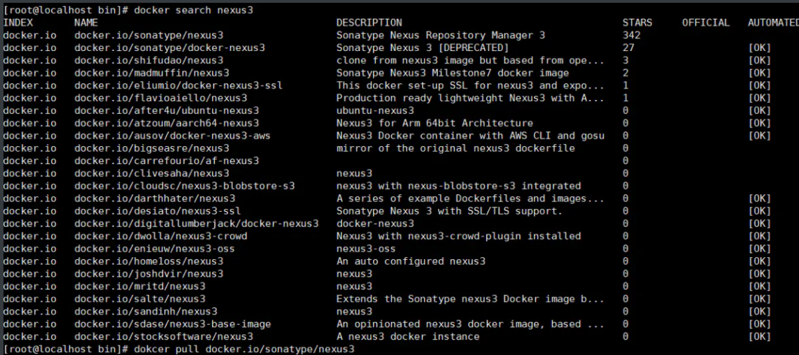
拉取nexus3镜像
1 | docker pull docker.io/sonatype/nexus3 |
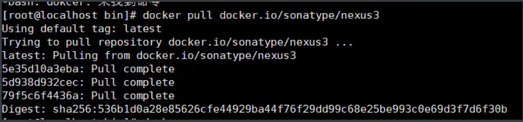
查看镜像
1 | docker images |
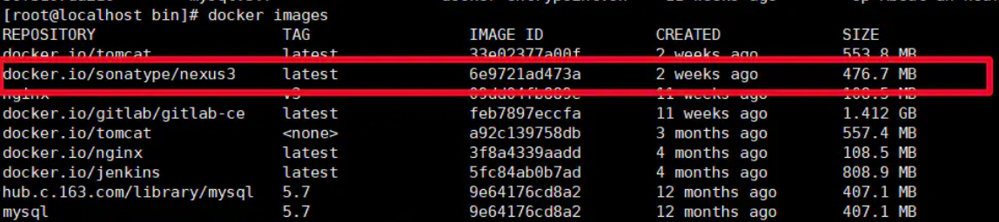
启动容器
1 | docker run -tid -p 8081:8081 --privileged=true --name nexus3 -v $PWD/nexus-data:/var/nexus-data --restart=always docker.io/sonatype/nexus3 |
-tid ：创建守护式容器 。
-p 8081:8081 ：宿主机端口（对外访问端口）：容器映射端口。
这2个端口可不一样。浏览器访问URL用前面个端口 。
—privileged=true ：容器访问宿主机的多级目录时可能会权限不足，故给 root 权限 。
—name nexus3 ：给容器取名，可任意设定。
-v $PWD/nexus-data:/var/nexus-data ：
把容器中的 nexus-data 目录挂载到宿主机当前路径下的 nexus-data 下。
方便以后查看相关数据。
$PWD ：取当前路径。此处可以写死为某个完整的确定的目录。
挂载格式为： -v 宿主机目录 ：容器目录 。
—restart=always ：服务挂后，自动重启 。
docker.io/sonatype/nexus3 ：镜像名 。
启动容器2
1 | docker run -id --privileged=true --name=nexus3 --restart=always -p 8081:8081 -v /kichun/nexus3/nexus-data:/var/nexus-data 6e9721ad473a（这个是容器id或名称） |
解释：
-id 创建守护式容器
—privileged=true 授予root权限（挂载多级目录必须为true，否则容器访问宿主机权限不足）
—name=名字 给你的容器起个名字
-p 宿主机端口：容器端口映射
-v 宿主机目录：容器目录 目录挂载
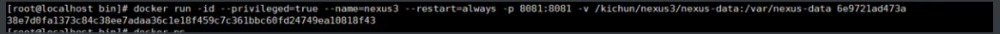
注意：
运行容器后访问主机+配置的宿主机映射端口无反应时，请稍等几分钟（视配置时间长短不一），等待nexus3完成初始化才能访问成功
访问nexus3
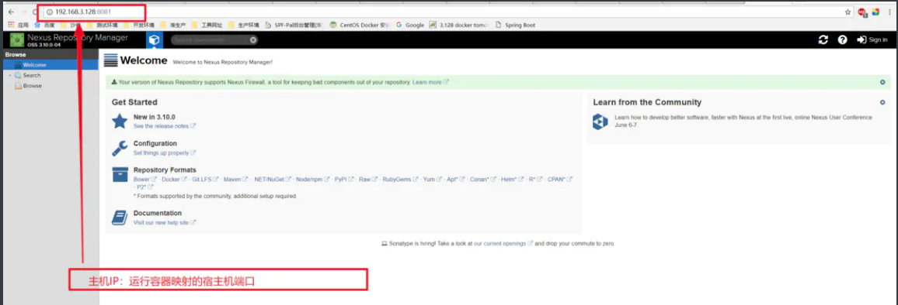
登录
默认admin密码admin123
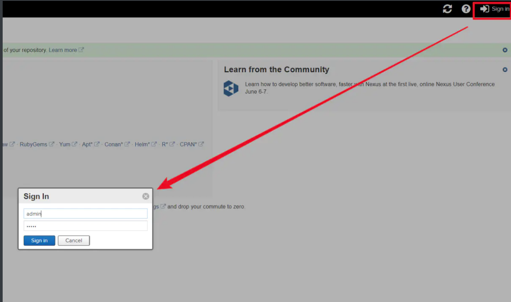
查看仓库
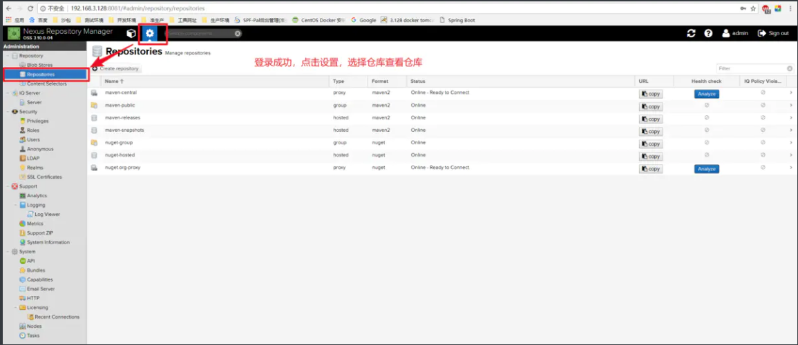
在项目中配置私服
拷贝public仓库地址
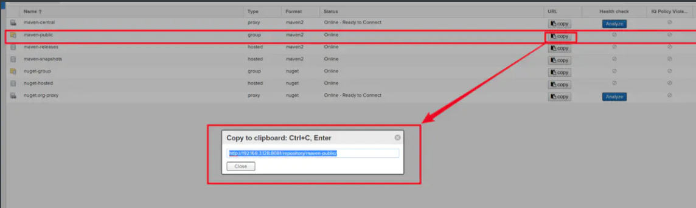
配置到你本地maven的settings文件
注意：是public group仓库地址而不是releases或snapshots仓库，public默认包含了这两个仓库
1 | <profiles> |
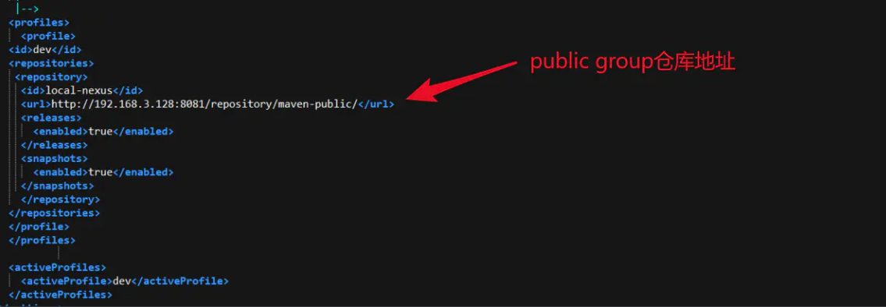
配置maven settings文件的服务器用户名密码
注意：id为私服中releases和snapshots仓库名，必须一致
1 | <!-- servers |
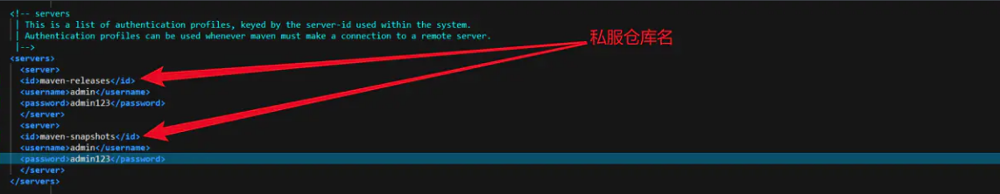
在项目父pom文件中配置部署环境，注意id及URL必须与nexus仓库对应
1 | <!--私服仓库--> |
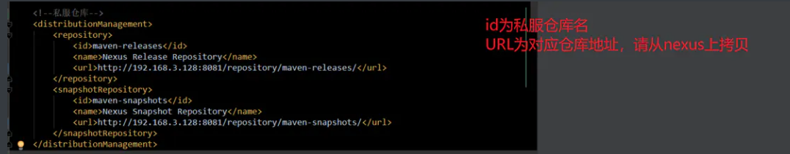
重新打开项目，对需要的模块进行deploy
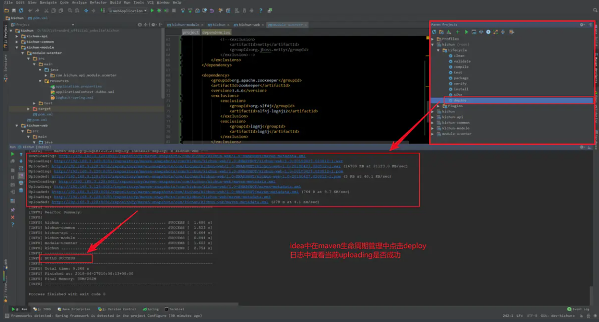
在nexus中查看上传的jar
PS：
遇到问题1：
在启动容器时我原本想换个端口，但发现不用 8081 时，tcp 的端口映射也是自动设置为 8081 的。并且换了端口后，虽然能启动容器成功，显示为运行状态，但是浏览器始终访问不到服务，报错：拒绝连接。最后还是使用了 8081 端口。
遇到问题2：
登陆时始终报错，账号或密码不对，默认密码并不是 admin123。
对此解决方法见文章： ( Docker 方式运行 Nexus3 登陆密码不为 admin123 、重置登陆密码)
遇到问题3：
容器内部的时间比服务器时间晚 8 小时。
解决方法：启动容器时 加入参数： -v /etc/localtime:/etc/localtime:ro 。ro：只读。
完整启动命令为：
1 | docker run -tid -p 8081:8081 --privileged=true --name nexus3 -v $PWD/nexus-data:/var/nexus-data -v /etc/localtime:/etc/localtime:ro --restart=always docker.io/sonatype/nexus3 |
遇到问题4：
执行 mvn deploy 命令报错：
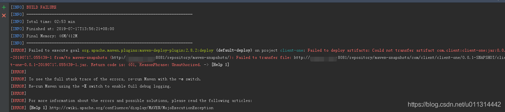

...
...
Copyright 2021 sunfy.top ALL Rights Reserved